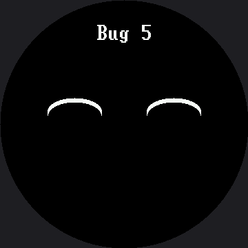

Five Broken Faces¶
Every face in this lab is broken on purpose, each by one bug that real people make on this exact hardware all the time. Your job is to fix all five.
Three of the five are different bugs from the OLED kit's version, and that is the lesson hiding
inside the lesson: change the hardware and you change the bugs. There is no forgotten show() here,
because there is no show(). What replaces it are two failures that display could never have —
work that gets erased the instant after you draw it, and a face drawn perfectly onto glass you
cannot see.
Broken code is normal, not shameful
 Every programmer alive spends more time fixing things than writing them. This is the lab where that stops being frustrating and starts being a skill you own.
Every programmer alive spends more time fixing things than writing them. This is the lab where that stops being frustrating and starts being a skill you own.
Debugging Has a Method¶
Guessing and editing random lines is not it. Do this instead, for each face:
- READ the docstring. It says what the face is supposed to look like.
- PREDICT what you think will happen before you press the button.
- OBSERVE what actually happens, and describe the difference out loud in one sentence: "it should smile but it frowns."
- LOCATE the smallest piece of code that could cause that difference.
- FIX one thing, then run it again. One change at a time — if you change three lines and it works, you have not learned which one mattered.
Step 3 is the one people skip, and it is the one that does the most work. Naming a symptom precisely is most of the way to finding its cause.
The Five Faces¶
Button A goes to the next face, button B goes back. The bug number also prints to the Thonny shell, which matters for bug 1 — when the screen shows nothing at all, the shell is the only thing telling you the program is alive and doing what you asked.
| Bug | Symptom | What is different about this display |
|---|---|---|
| 1 | Nothing appears | Every call lands immediately, so a wipe in the wrong place erases finished pixels |
| 2 | The dot smears into a stripe | There is no frame buffer to forget to clear — the glass just keeps everything |
| 3 | The eyes are missing | The coordinates are legal, addressable, and outside the circle |
| 4 | The smile is upside down | The quadrant mask is inverted |
| 5 | The button stops working | Something in the loop is blocking |
def bug_1():
"""SHOULD SHOW: a plain happy face -- two eyes, two brows, and a wide
smile. ACTUALLY SHOWS: predict it before you press A.
Every drawing call below is correct, and every one of them runs. Look
at the shell to confirm that. Then look at the ORDER."""
face.eyes(36, 36)
face.eyebrows(0, 0, lift=8)
face.mouth(face.SMILE, 75, 36)
face.label("Bug 1")
face.clear()
Here's the fifth face, which is the one on screen when the program has cycled to the end:

Each bug is a separate screen, so one picture shows one of the five. Press the buttons to walk them.
The Symptom Table¶
Read this only after you have tried. It doubles as a standing troubleshooting reference for every other lab in the kit, which is why this is the lab to reach for when a class is stuck.
| What you see | What causes it |
|---|---|
| A black screen, but the shell keeps printing | Two different causes produce this exact symptom, and telling them apart is the skill. See below. |
| Old pixels stay behind and pile up into a smear | Nothing erased the previous frame. There is no frame buffer here — the glass keeps whatever you last sent it, forever, until you paint over it. |
| A shape is simply not there, and no error was raised | It was drawn outside the circle. The controller addresses a 360×360 square; the glass is the circle inscribed in it. config.inside_circle(x, y) is the check you have to run yourself. |
| A curve bends the wrong way | The quadrant mask is inverted. TOP_HALF (3) frowns, BOTTOM_HALF (12) smiles. |
| Button presses get ignored some of the time | Something in the loop is blocking. While sleep() runs, nothing else does — and on this display a slow draw blocks the same way. There are 129,600 pixels on this panel to push, so even face.clear() in a tight loop can cause it. |
The Black Screen Has Two Causes¶
(a) Something erased your work after you drew it. On a buffered display the order of a clear
was hidden until show(). Here every call lands immediately, so a wipe in the wrong place wipes
finished pixels off the glass.
(b) The backlight is off. A GC9B72 is a transmissive LCD: it does not make light, it filters a lamp sitting behind it. With the backlight low, the pixels are set correctly and there is nothing to see them by. This is the number one "my display is dead" report, and it is not a display problem.
Rule Out the Backlight in One Line
 On this kit
On this kit BL is a real wire on GP7, not tied to 3V3, so a dim backlight is always a live suspect — never cross it off the list here. Call config.set_backlight(True) from the REPL first. If the face appears, you just found cause (b); if it doesn't, go look for cause (a).
Bug 3 Is the Round Screen's Signature¶
It has a nasty property: the same code on a rectangular display of the same 360×360 addressable area would look very nearly perfect, because there the corners would be real, visible pixels.
# Where you would put the eyes if you were laying out a RECTANGULAR
# 360x360 display: a comfortable margin in from the top two corners.
BAD_EYE_X = 45
BAD_EYE_Y = 45
Every coordinate there is one the display accepts without complaint. There is no error, no warning,
and no exception. There is just nothing there — and on this screen it is actually two mistakes
stacked on top of each other. Each eye is a 48-pixel-radius circle centered at (45, 45), so its
bounding box reaches from -3 to 93 in both directions: part of the shape falls off the
addressable square entirely, and whatever survives sits out at the rim, in the corner the bezel
covers.
That second part is not just "off center" — it is measurably outside the safe circle.
config.SAFE_RADIUS is 168 here, measured from the center at (180, 180). BAD_EYE_X = 45 is the
smartwatch kit's BAD_EYE_X = 30 scaled by the same 1.5× as everything else on this screen, and the
safe radius scaled right along with it (112 → 168) — so it would be easy to assume the bug survived
the scaling by arithmetic alone. It didn't; it survived because someone checked. config.inside_circle(45, 45)
really is False on this kit's own numbers, not just on the smartwatch kit's.
Bug 5 Is About Time¶
It is the only one you cannot see in a screenshot. Nothing looks wrong in a picture of the screen; the program is just too slow to notice a finger. Bugs like that are the hardest kind, which is exactly why the next lab builds a tool for watching them.
You now have a method
 Predict, observe, name the difference, change one thing. That works on code you have never seen, in languages you have not learned yet. Great expression!
Predict, observe, name the difference, change one thing. That works on code you have never seen, in languages you have not learned yet. Great expression!
Things to Try¶
- Break one on purpose in a new way and hand the file to a partner. Writing a bug that produces a specific symptom proves you understand the cause, not just the cure.
- Write down the symptom for each bug in your own words before checking the table above.
- Walk bug 3 home. Move
BAD_EYE_XandBAD_EYE_Yfifteen pixels at a time toward the center and note exactly where each eye appears.config.inside_circle(45, 45)isFalseandconfig.inside_circle(180, 45)isTrue— somewhere between those two is the edge you're hunting for. - Fix bug 5 twice — once by removing the blocking sleep, and once by pacing it with
ticks_ms()from the no-blocking lab. Compare the two fixes.
References¶
- Trace and Watch — the instrument for bugs you cannot photograph
- Screen Coordinates — why a legal coordinate can still be invisible
- Drawing Ellipses — the quadrant masks behind bug 4
- Five Broken Faces on the 1.2" kit — the same five bugs
on the smaller 240×240 screen, where
BAD_EYE_XandSAFE_RADIUSare different numbers entirely